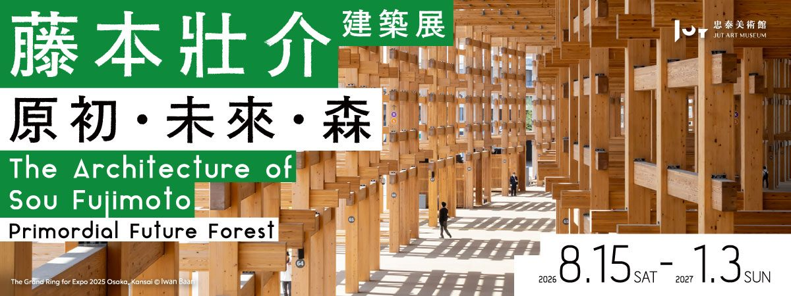

探索全球建築設計趨勢與市場脈動，從空間美學到產業洞察，為您提供專業觀點。

2026.08.15 – 2027.01.03
忠泰美術館迎向開館十週年，延續長期關注的城市與未來議題推出系列展覽，首檔邀請日本建築師藤本壯介來臺舉辦個展，以「原初」與「森」為軸線，探討建築如何回到人與環境最初的關係。
展覽資訊：忠泰美術館（台北市大安區市民大道三段178號）
展覽詳情 →以「自然素材、弱化、疊加、縫隙、柔和」五個關鍵字，拆解隈研吾建築美學的核心語彙，從木橋美術館到石之美術館，看他如何用在地材料回應環境。
原文出處：MOT TIMES 明日誌 →
邱德光的新裝飾主義、季裕棠的頂級酒店美學、李瑋珉的人文空間敘事⋯⋯盤點華人設計圈當代最具代表性的空間美學大師。
原文出處：Yahoo新聞 →
從風之教堂到光之教會，一次看懂「清水混凝土詩人」如何用最樸實的材料，營造光影與信仰之間的對話。
原文出處：LuxuryWatcher →
妹島和世與西澤立衛親自導覽，8座純白量體串連圖書館與美術館，以「像逛公園一樣」的空間邏輯，重新定義文化設施與城市的關係。
原文出處：MOT TIMES 明日誌 →
普立茲克獎大師法蘭克．蓋瑞在東亞唯一作品，選址台中水湳，以折疊金屬與起伏不鏽鋼捕捉天光，如水彩暈染，預計2029年完工。
原文出處：500輯／聯合報系 →
建築理念如何延伸到品牌視覺？聶永真團隊耗時三年，用簡練直線隱喻「邊界中的無限」，呈現跨域流動的場館形象。
原文出處：MOT TIMES 明日誌 →
日經建築前總編以「驚喜系、沉靜系、柔和系、靜謐系」四大分類，重新梳理隈研吾50座作品，提供不同於地理與功能分類的全新視角。
原文出處：MOT TIMES 明日誌 →
精選安藤忠雄五座代表作，含瀨戶內海旅館改建案，清水模立面搭配落地窗景，將自然山林景色引入居所，寂靜中見禪意。
原文出處：設計王 DesignWant →